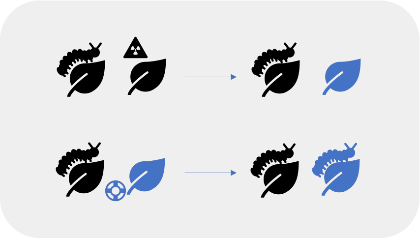

- Introduction
- Developing a new model for a classic hypothesis
- Quantifying the role of coevolution in lineage diversification
- Software process meets the scientific method
- Considerations
- Summary
Coevolving trees and the phylogenetic comparative method
Breanna Sipley
PhD, Bioinformatics and Computational Biology
Outline
Introduction
Big questions
- How do ecological interactions shape the diversification of life?
- Why is parasitism so common?

Parasitic barnacle (Heterosaccus californicus)
Sheep crab (Loxorhynchus grandis)
Photo by Anand Varma, "Mindsuckers"
National Geographic (2014)
How may parasites evade coextinction?
"Evolutionary rescue occurs when adaptive evolutionary change restores positive growth to declining populations and prevents extinction"
— @CARLSON2014521
- Be less virulent
- Be less host-specific
- Speciate faster
How may parasites evade coextinction?
"Evolutionary rescue occurs when adaptive evolutionary change restores positive growth to declining populations and prevents extinction"
— @CARLSON2014521
- Be less virulent
- Be less host-specific
- Speciate faster
Problem
Cool to think about but hard to study
Current methods
Current methods
- Do not incorporate reciprocal selective pressures
Current methods
- Do not incorporate reciprocal selective pressures
- Neglect antagonistic coevolution btwn parasites & their hosts

Escape-and-radiate coevolution
Ehrlich and Raven (1964)
Thompson (1994)
Escape-and-radiate coevolution
"In escape-and-radiate coevolution, coevolution happens at key moments to drive the evolution of plant defenses and insect counter-defenses, and then other speciation processes (e.g., allopatric speciation) come into play as plants and insects increase their geographic ranges or further subdivide resources."
— Althoff, Segraves, and Johnson (2014)
Ehrlich and Raven (1964)
Thompson (1994)
Escape-and-radiate coevolution
"In escape-and-radiate coevolution, coevolution happens at key moments to drive the evolution of plant defenses and insect counter-defenses, and then other speciation processes (e.g., allopatric speciation) come into play as plants and insects increase their geographic ranges or further subdivide resources."
— Althoff, Segraves, and Johnson (2014)
Let's say we start with

Ehrlich and Raven (1964)
Thompson (1994)
Escape-and-radiate coevolution
"In escape-and-radiate coevolution, coevolution happens at key moments to drive the evolution of plant defenses and insect counter-defenses, and then other speciation processes (e.g., allopatric speciation) come into play as plants and insects increase their geographic ranges or further subdivide resources."
— Althoff, Segraves, and Johnson (2014)
Let's say we start with
Potential scenario

Ehrlich and Raven (1964)
Thompson (1994)
Developing a new model for a classic hypothesis
Quantifying the role of coevolution
in lineage diversification
Software process meets the scientific method
Considerations
Summary
Acknowledgements
Committee
Luke Harmon
Christine Parent
Aleta Quinn
Jack Sullivan
Rockstar labmates
Kristen Martinet, Orlando Schwery
BCB
Lisha Abendroth
Dave Tank
Resources
NSF GRFP, Idaho EPSCoR GEM3 VIP
UI IBEST CRC
Raven Scholars, CDAR, CTC, COGS
Snorks
Kelly Martin, Ian Oiler, Malia Santos, David Sneddon
Co-working friends
Chava Castaneda, Clint Elg, Yesol Sapozhnikov, Courtney Schreiner, Hannah Smith, Amanda Stahlke